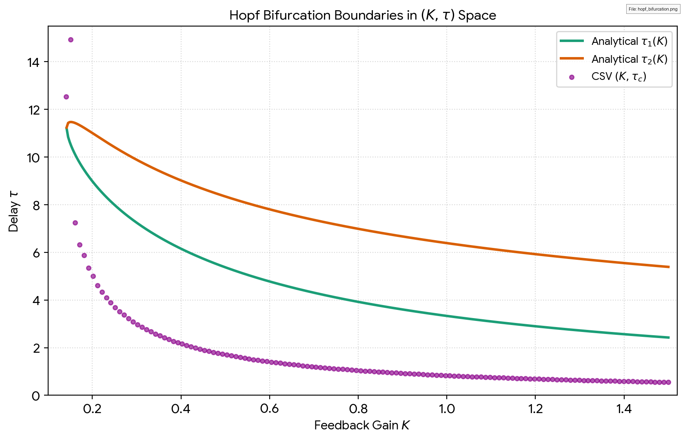
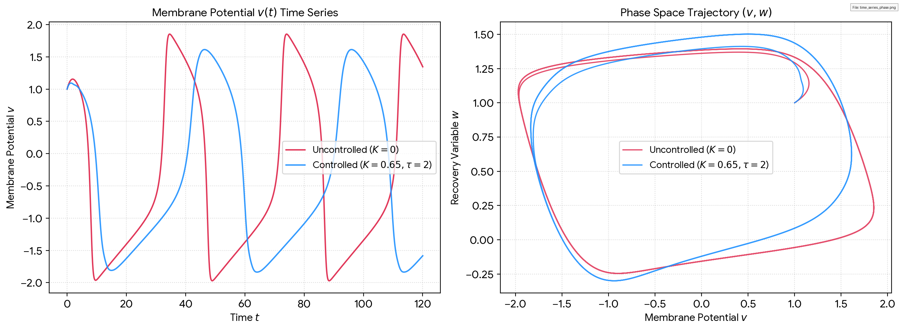
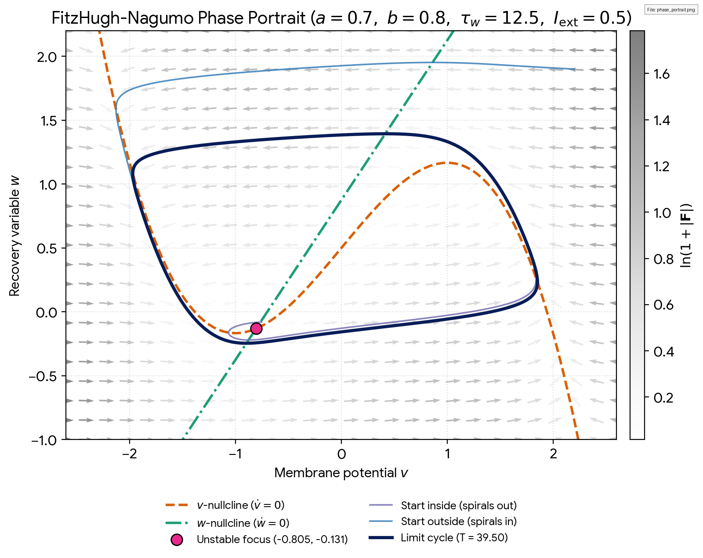

Fatemeh Mesri
Physics · Computational Modelling · Nonlinear Dynamics
MSc student in Condensed Matter Physics at K. N. Toosi University of Technology, with a background in Engineering Physics. Interested in theoretical physics, computational modelling, complex systems, and the physics of biological systems.
About Me
I am an MSc student in Condensed Matter Physics at K. N. Toosi University of Technology, with a BSc in Engineering Physics from the University of Tehran. My academic interests are rooted in theoretical and computational physics, guided by a central question: how do interactions among relatively simple components give rise to complex collective behaviour?
I am particularly interested in chaos theory, bifurcation theory, stochastic processes, and nonlinear dynamical systems. These interests connect closely with non-equilibrium statistical physics and the statistical mechanics of complex systems. I am especially drawn to soft condensed matter physics, including self-organization, active matter, pattern formation, and glassy dynamics.
Beyond these areas, I am interested in exploring the connections between physics and biological systems, particularly through biological physics, biophysics, and computational neuroscience. I am also interested in nanoscience and interdisciplinary applications of computational methods and machine learning. Ultimately, I hope to contribute to a deeper understanding of complex natural phenomena through mathematical modelling, numerical approaches, and the broader principles of theoretical physics.
Education
MSc in Condensed Matter Physics
K. N. Toosi University of Technology (KNTU), Tehran, Iran
BSc in Engineering Physics
University of Tehran, Iran
Research Interests
Computational Physics
Numerical modelling and scientific computing.Nonlinear Dynamics
Complex systems, bifurcations, and emergent behaviour.Computational Neuroscience
Neural dynamics and mathematical models of neuronal networks.Biophysics
Physical and mathematical approaches to biological systems.Statistical Physics
Collective behaviour and interacting systems.Technical Skills & Research Expertise
Computational & Programming Skills
Python, NumPy, SciPy, Matplotlib, PyTorch, Scikit-learn, Git, and GitHub.
Computational Neuroscience
Spiking Neural Network Simulation, Izhikevich Neuron Models, STDP and Synaptic Plasticity, Neural Dynamics, and Conductance-Based Neuron Models.
Mathematical Modeling & Nonlinear Dynamics
Numerical Solution of Differential Equations, Bifurcation Analysis, Stability Analysis, Saddle-Node Bifurcations, and Multistability.
Scientific Computing
Numerical Simulation, High-Performance Computing, Parallel Computing, and Computational Data Analysis.
Scientific Writing
LaTeX, Scientific Documentation, and Reproducible Research.
Current Research
Computational Modelling of Neural Network Dynamics and Synaptic Plasticity
My MSc research focuses on the computational modelling of interacting neural networks and the role of synaptic plasticity in shaping collective behaviour. Neurons are described by the Izhikevich spiking-neuron model, chosen for its ability to reproduce a wide range of cortical firing patterns at modest computational cost. Activity-dependent changes in synaptic strength are introduced through spike-timing-dependent plasticity (STDP).
The work proceeds in carefully gated stages. The first stage — numerical verification and reproducibility of the Izhikevich neuron and basic network simulations — has been completed. Current efforts centre on incorporating STDP and examining how the interplay between the plasticity rule, network connectivity and neuronal activity affects spike-timing organisation, synaptic-weight distributions, synchrony, collective oscillations and dynamical stability.
Supervisor:
Dr Ehsan Norouzifar
Institution: K. N. Toosi University of Technology
Physics-Informed Machine Learning with Quantum-Chemical Descriptors for Drug Distribution Prediction in Plasma
An interdisciplinary research project exploring the potential application of physics-informed machine learning and quantum-chemical descriptors in computational studies of drug distribution in plasma. The project investigates whether molecular-level quantum-chemical properties, combined with computational modeling approaches, may contribute to the analysis and prediction of drug distribution behavior in plasma.
Research Supervisor: Dr. Abbas Rahdar
Joint Second Authors: Fatemeh Mesri
Status: Manuscript in preparation.
Research Areas: Quantum Biocomputing, Computational Biophysics, Bioinformatics, Neural Networks, Drug Discovery.
Research Direction: Food Chemistry, Food Analysis, Spectroscopy, Analytical Chemistry, and Food Characterization.
Status: Preliminary research and project development.
Research Supervisor: Dr. Farrokh Sarreshtedari
Selected Projects
2D Ising Model: Monte Carlo Simulation & Finite-Size Scaling
A computational physics project investigating critical phenomena and phase transitions in the two-dimensional Ising model using Monte Carlo simulations and finite-size scaling analysis.
Key Contributions
- Implemented Metropolis Monte Carlo simulations.
- Analyzed magnetization, susceptibility, and specific heat.
- Investigated finite-size effects for L = 8, 12, 16, 24, 32.
- Extracted critical exponents using finite-size scaling.
- Compared numerical results with Onsager's exact predictions.
Key Result: γ/ν = 1.752 ± 0.039 (Onsager: 1.75)
Technologies: Python, NumPy, Matplotlib, Monte Carlo Methods, Statistical Mechanics
View Project on GitHubSaddle-Node Bifurcation in the Izhikevich Model
A computational project exploring bifurcation behaviour in a spiking-neuron model.
View Project on GitHubOptogenetic Control of Neuronal Dynamics: ChR2-H134R and Hodgkin–Huxley Modelling
A computational biophysics project investigating how light stimulation regulates neuronal electrical activity. The project combines the four-state kinetic model of Channelrhodopsin-2 (ChR2-H134R) with the classical Hodgkin–Huxley model to study neuronal excitability, spike generation, and response dynamics.
Technologies: Python, NumPy, SciPy, Matplotlib.
View Project on GitHubPyragas Time-Delayed Feedback in the FitzHugh–Nagumo Neuron: Linear Stability, Hopf Boundaries and Numerical Validation
Project Overview: This project investigates the application of Pyragas time-delayed feedback control to stabilize the unstable equilibrium of the FitzHugh-Nagumo (FHN) neuron. The research derives the linear stability conditions, identifies Hopf bifurcation boundaries analytically, and validates the analytical predictions through robust numerical simulations (RK4 and DOP853) and Chebyshev pseudospectral collocation methods.
Research Areas: Computational Biophysics, Nonlinear Dynamics, Neural Networks.
Technologies: Python, NumPy, SciPy, Matplotlib.
Project Timeline & Phases
| Phase | Sub-project Description | Start Date | End Date | Status |
|---|---|---|---|---|
| 1 | Mathematical Modeling and Non-invasiveness Proof | Aug 2024 | Sep 2024 | Completed |
| 2 | Linear Stability Analysis and Characteristic Equation Derivation | Oct 2024 | Dec 2024 | Completed |
| 3 | Deriving Hopf Locus and Stable Delay Band Boundaries | Jan 2025 | Mar 2025 | Completed |
| 4 | Numerical Validation (RK4, DOP853, and Chebyshev Collocation) | Apr 2025 | May 2025 | Completed |
| 5 | Case Studies (Delay Below and Inside the Stable Band) | Jun 2025 | Aug 2025 | Completed |
Key Visualizations

Fig 1: Hopf Bifurcation Boundaries in (K, τ) Space.

Fig 2: Comparison of uncontrolled and controlled (K=0.65, τ=2) membrane potential and phase trajectory.

Fig 3: Phase portrait of the uncontrolled FHN system with vector field and nullclines.
Numerical Results & Tables
Table 1. Hopf frequencies and stable-delay band edges at selected gains.
| Gain (K) | ω₋ | τ₁ (Lower Edge) | ω₊ | τ₂ (Upper Edge) | Band Width (τ₂ - τ₁) |
|---|---|---|---|---|---|
| 0.20 | 0.1858 | 8.98 | 0.3718 | 11.01 | 2.02 |
| 0.30 | 0.1590 | 7.24 | 0.4668 | 9.89 | 2.64 |
| 0.65 | 0.1308 | 4.53 | 0.6875 | 7.57 | 3.05 |
| 1.00 | 0.1215 | 3.33 | 0.8494 | 6.39 | 3.06 |
| 1.50 | 0.1155 | 2.43 | 1.0369 | 5.39 | 2.96 |
Table 2. Asymptotic limit-cycle properties of the free and the controlled neuron.
| Quantity | Free (K = 0) | Controlled (K = 0.65, τ = 2) |
|---|---|---|
| Period T | 39.47 | 49.59 |
| v maximum | 1.852 | 1.613 |
| v minimum | −1.970 | −1.836 |
| v amplitude | 3.822 | 3.449 |
Table 3. Predicted spectral abscissa and simulated long-time behavior.
| τ | Largest Re λ (Im λ) | Start 0.36 from equilibrium | Start at (1, 1) |
|---|---|---|---|
| 2 | +0.0412 (±0.1602) | oscillation | oscillation |
| 6 | −0.0128 (±0.1175) | converges | oscillation, T = 69.39 |
| 8 | +0.0056 (±0.6558) | oscillation | oscillation |
Future Projects
Adaptive Optical Systems
Exploring a fluid-based adjustable lens system with potential applications in adaptive optics.
Interested in Collaboration? Get in Touch →Dynamical Mapping of Trauma-Related Neural States
Exploring trauma-related neural dynamics and emotional processing through nonlinear systems and phase-space analysis.
Interested in Collaboration? Get in Touch →Mathematical Modeling and Control of Goal-Directed Neural Dynamics
An interdisciplinary research program on the geometric structure, nonlinear dynamics, controllability, and strategic interactions of goal-directed neural systems.
Explore Research Structure
Research Overview
This research program investigates goal-directed neural systems through the mathematical frameworks of dynamical systems, differential geometry, and control theory.
The central objective is to develop a unified mathematical description of neural state-space structure and its temporal evolution, and to determine the conditions under which neural trajectories can be characterized, influenced, and controlled.
Rather than imposing specific dynamical assumptions in advance, the program examines the underlying geometry and dynamics of neural systems, allowing properties such as attractor structures, nonlinear transitions, chaotic regimes, and controllability to emerge from mathematical analysis.
Research Structure
01. Neural State-Space Geometry
Geometric Reconstruction and Analysis of Neural State Spaces
Investigating the geometric organization of neural population activity, with an emphasis on low-dimensional representations, effective manifolds, and the latent structure of neural dynamics.
02. Nonlinear Dynamics of Neural State Space
Stability, Attractors, and Dynamical Regimes
Analyzing the nonlinear evolution of neural states through equilibrium analysis, attractor structures, local and global stability, bifurcations, and the possible emergence of complex or chaotic dynamics.
03. Controllability of Neural Trajectories
Reachability and State-Space Control
Establishing the mathematical conditions under which neural trajectories can be influenced or steered toward specified target regions, subject to structural and dynamical constraints.
04. Strategic Multi-Agent Control of Neural Dynamics
Game-Theoretic Interactions and Coordinated Control
Investigating how strategic interactions among multiple decision-making agents or controllers influence system trajectories, coordination, equilibrium structures, and controllability.
05. Robust Control under Uncertainty
Stability and Control in Perturbed Dynamical Environments
Examining the robustness of neural dynamical models under stochastic noise, parametric uncertainty, structural perturbations, and changing environmental conditions.
Research Progression
- Geometric characterization of neural state spaces.
- Identification and analysis of their underlying dynamical regimes.
- Mathematical investigation of trajectory reachability and controllability.
- Extension to strategic and multi-agent interactions.
- Evaluation of robustness under uncertainty and perturbation.
This progression represents a conceptual research structure rather than a rigid sequence of prerequisites. Individual directions may develop in parallel where the mathematical formulation permits.
Guiding Principles
- No specific assumption of chaos, attractor topology, or controllability is imposed a priori.
- Mathematical properties are to be established through explicit definitions, analytical results, and computational investigation.
- Dynamical models must remain consistent with the biological interpretation of the neural systems under study.
- Each research direction is formulated around an independently investigable mathematical problem.
- The integration of the individual studies should contribute to a coherent framework for understanding and controlling goal-directed neural dynamics.
Long-Term Objective
To establish a mathematically rigorous and biologically interpretable framework connecting the geometry, nonlinear evolution, and controllability of neural systems, while accounting for strategic interactions and environmental uncertainty.
Interested in Collaboration? Get in Touch →Publications
Optogenetics: Concepts and Applications
Fatemeh Mesri
Originally published in Persian in Frequency (Farakans) Science Magazine, Issue 1, Spring 2022, pp. 33–39.
English translation reviewed by the university's scientific committee.
Read the English Translation (PDF)Achievements
National Nanotechnology Competition
Qualified for the second stage of the 15th National Nanotechnology Science and Technology Competition (Iran).
View Official Qualifiers ListContact
- Email: fateme.mesri@email.kntu.ac.ir
- LinkedIn: linkedin.com/in/fatemeh-mesri-404129207
- GitHub: github.com/FatemehMesri